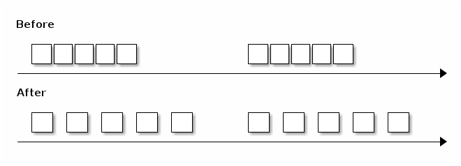
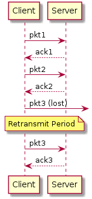
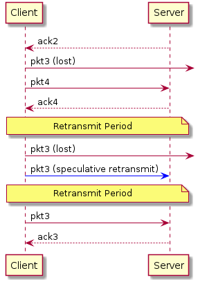
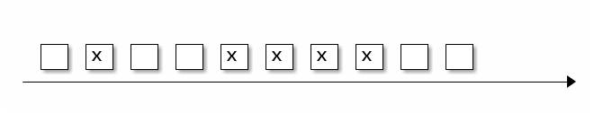

Разработка сетевого протокола
Table of Contents
Интро
Мы хотим разработать многофункциональный протокол для трансляции видео и аудио на базе UDP, способный устойчиво работать в сетях с плохой пропускной способностью, таких как, например, 3G.
Требования к протоколу
- Многопоточность, то есть поддержка нескольких потоков:
- управляющий
- видео
- аудио
- Опциональная гарантия доставки — управляющий поток имеет 100% гарантию, видео нам нужно меньше всего — мы там можем дропать фрейм, аудио нам все-таки бы хотелось.
- Приоритезация потоков — чтобы аудио уходило вперед, а управляющий вообще летал.
- Опциональное шифрование: или все данные, или только заголовки и критичные данные.
Простая UDP-отсылка
Открываем UDP-соединение, забираем данные, упаковываем и отправляем. Соответствующий код будет выглядеть так:
#define SERVER "127.0.0.1" #define BUFLEN 512 // Max length of buffer #define PORT 8888 // The port on which to send data int main(void) { struct sockaddr_in si; int s, i, slen=sizeof(si); char buf[BUFLEN]; char message[BUFLEN]; if ( (s=socket(AF_INET, SOCK_DGRAM, IPPROTO_UDP)) == -1) { fprintf(stderr, "socket() failed\n"); exit(1); } memset((char *) &si, 0, sizeof(si)); si.sin_family = AF_INET; si.sin_port = htons(PORT); if (inet_aton(SERVER , &si.sin_addr) == 0) { fprintf(stderr, "inet_aton() failed\n"); exit(1); } message = get_new_data(); if (sendto(s, message, strlen(message) , 0 , (struct sockaddr *) &si, slen)==-1) { fprintf(stderr, "sendto() failed\n"); exit(1); } message = get_new_data(); if (sendto(s, message, strlen(message) , 0 , (struct sockaddr *) &si, slen)==-1) { fprintf(stderr, "sendto() failed\n"); exit(1); } }
Но мы получим такую картину: если мы начинаем беспорядочно слать UDP пакеты в socket, то по статистике к 21-му пакету вероятность того, что он дойдет, будет всего лишь 85%. То есть packet loss уже будет 15%, что нужно исправлять.
Pacer
Для дальнейшего обсуждения важно заметить, что мы получаем "с той стороны" подтверждения о приходе пакетов. По ним мы можем определить процент потерянных пакетов и даже оцениить скорость, с которой они доходят.
Pacer — это такая штука, которая раздвигает пакеты во времени и контролирует их потерю; смотрит, какой сейчас packet loss, в зависимости от этого адаптируется под скорость канала.

Как мы помним, для мобильных сетей 1-3% packet loss — это норма. Соответственно, надо с этим как-то работать. Что делать, если мы теряем пакеты?
Retransmit
Fast Retransmit
В TCP, как известно, есть алгоритм fast retransmit: мы отправляем один пакет, второй, если пакет потеряли, то через некоторое время (retransmit period) отправляем этот же пакет.

Какие здесь плюсы? Никаких проблем, никакой избыточности, но есть минус — некоторый retransmit period: через некоторое время нужно повторить пакет, если его подтверждение не получено. Логично, что это может быть время равное времени пинга. Но ping — это величина не стабильная, и поэтому точно через средний RTT time определить, что потерян пакет, мы не можем.
RTT (round-trip delay time), - это время затраченное на отправку пакета, плюс время, за которое придет пакет, подтверждающий получение отправленного пакета.
Оно подчиняется нормальному распределению:
Retransmit period: jitter
Для того, чтобы это оценить, как может изменяться задержка можно использовать
jitter. Джиттер описывает максимальное различие времени задержек передачи от пакета к
пакету. Т.е мы можем вычесть самый быстрый RTT из самого медленного и разделить на два,
в предположении, что пакеты и "туда" и "обратно" ходят с равной скоростью.
Есть некоторая величина, после которой мы можем действительно понять, что подтверждение не пришло и повторить отправку пакета. В TCP есть RFC6298, который говорит, как это можно хитро посчитать.
Мы можем использовать для этого jitter. В среднем jitter по ping примерно
15%. Понятно, что retransmit period должен быть, как минимум, на 20% больше, чем RTT.

Продолжим. С прошлого раза у нас был acknowledge на второй пакет. Мы отправляем третий пакет, который теряется, другие пакеты пока ходят. После этого наступает retransmit period, и мы отправляем третий пакет еще раз. Он еще раз потерялся, и мы еще раз отправляем его.
Если у нас случается двойная потеря пакета, то на retransmit появляется новая проблема. Если у нас процент потери покетов, например, 5, и мы отправляем 400 пакетов, то на 400 пакетов у нас 1 раз будет ситуация двойной потери, то есть, когда мы через retransmit period отправили пакет, и он еще раз не дошел.
Эту ситуацию можно исправить, добавив некоторую избыточность. Можно начать отправлять
пакет, например, если мы получили acknowledge от другого пакета. Считаем, что
опережение — это редкая ситуация, можем начать отправку третьего пакет в момент,
обозначенный speculative retransmit выше.
Forward error correction (FEC)
А что если добавить Forward Error Correction? Давайте просто все наши пакеты снабдим, например, XOR. Если мы точно знаем, что в мобильных сетях все так печально, то давайте просто добавим еще один пакетик.
А что, если пропадет не один пакет, а сразу два? Давайте вместо XOR возьмем другое решение — например, есть код Reed-Solomon, Fountain codes и т.д. Идея такая: если есть K пакетов, можно добавить к ним N пакетов так, что любые N можно было потерять.
Nack
Хорошо, если у нас такая плохая сеть, что пропали просто все пакеты, то к нашему Forward Error Correction очень удобно добавляется negative acknowledgement.
Если мы потеряли столько пакетов, что наш parity protection (назовем его так) нас уже не спасает, запрашиваем этот пакет дополнительно.
Плюсы NACK:
- простой в реализации, правда можно потерять и сам negative acknowledgement, но это мелкая проблема.
- хорошо совместим с FEC.
Итого, есть два интересных решения:
С одной стороны, FEC + NACK; С другой стороны, Fast retransmit.
Packet Gap
Посмотрим, как распределены потери пакетов.

Оказывается, что пакеты теряются не равномерно по одной штучке, а пачками. Это связано с тем, что иногда на несколько десятков микросекунд сеть оказывается полностью недоступна. Поэтому, при использовании FEC+NACK мы хотим справляться с ситуацией, когда целая пачка пакетов потерялась. Вот статистика по средней сети:
- 1 Мб/с сеть;
- 1% packet loss;
- 300 мс RTT;
- 1 000 байт — размер пересылаемых пакетов;
- 1 000 пакетов в секунду уходит.
| Gap size | Packet loss, % | Gap duration, ms | Network type |
|---|---|---|---|
| 17 | 2.5 | 105 | EDGE |
| 8 | 0.5 | 34 | 3G |
| 7 | 0.7 | 29 | LTE |
| 5 | 0.5 | 22 | WiFi |
Чем хуже сеть, тем больше пачка потерянных пакетов. В таблице указано время, которое сеть была недоступна. Например, Wi-Fi недоступен 22 мс и теряет 5 пакетов, 3G может за 34 мс потерять 8 пакетов.
FEC+NACK vs Fast Retransmit
Если мы знаем, что у нас 90% packet loss на портале укладывается в 10 пакетов, и при
этом средний gap равен 25 мс, что будет работать лучше — FEC+NACK или Fast
retransmit?
FEC+NACK
В такой ситуации логично добавлять в FEC 10 пакетов избыточных данных к каждым 1000,
чтобы справляться с 1% packet loss. Почему нельзя к 100 пакетам добавлять 1 — потому
что, если мы потеряли интервал хотя бы в 2 пакета, мы не восстановимся.
Мы начинаем делать такие добавки, и вроде бы все здорово. И тут на 500-м пакете, теряем ту самую пачку из 10 штук.
У нас есть варианты:
- Дождаться оставшиеся 500 пакетов и восстановить данные через Forward Error Correction. Но на это у нас потратится примерно полсекунды, а пользователь эти данные ждет.
- Можно воспользоваться NACK, причем это дешевле, чем дожидаться кодов коррекции. А еще можно просто взять Fast Retransmit, не добавлять никаких кодов коррекции и получить тот же самый результат.
Поэтому Forward Error Correction действительно работает, но работает на очень узком диапазоне — когда gap небольшой и можно раз в 200-300 пакетов вставлять избыточные данные.
Fast Retransmit
Это работает так: после того, как мы потеряли пачку в 10 пакетов, отправив пока другие
пакеты, понимаем, что у нас retransmit period прошел, и отправляем эти пакеты заново.
Самое интересное в том, что retransmit period на такой сети будет 350 мс, а средняя
длительность этого packet gap - 25-30 мс, пусть даже 100. Это означает, что к
моменту, когда retransmit начнет обрабатывать пакеты, в большинстве случаев сеть уже
восстановится и они уйдут.
Дополнительно
Когда вы пишете свой протокол поверх UDP и у вас есть возможность отправки пакетов, вы получаете дополнительные плюшки.
Есть буфер отправки, в нем лежит опорный кадр, к нему p/b-кадры. Они равномерно уходят в сеть. Тут они перестали уходить в сеть, а в очередь прилетели еще пакеты.
Вы понимаете, что на самом деле все пакеты, которые лежат в очереди, уже больше не интересны клиенту, потому что прошло, например, больше 0,5с и надо на клиенте просто склеить разрыв и жить дальше.
Вы можете, имея информацию о том, что у вас хранится в этих пакетах, почистить не только опорный кадр, но и все p/b, от него зависящие, и оставить исключительно нужные и целостные данные, которые потом могут потребоваться клиенту.
MTU
Так как мы сами пишем протокол, то придется столкнуться с IP fragmentation.
У нас есть сервер, он отправляет какие-то пакеты размером, к примеру, 1500 байт, они приходят к маршрутизатору и на его уровне MTU (maximum transmission unit) становится ниже, чем размер пакета, который пришел. Он дробит пакет на большой и маленький (к примеру, 1100 и 400 байт) и отправляет.
В принципе, проблемы нет, это все соберется на клиенте и будет работать. Но если мы теряем 1 пакет, мы дропаем все пакеты, плюс получаем дополнительные издержки на header’ы пакетов. Поэтому, если вы пишете свой протокол, идеально работать в размере MTU.
Как его посчитать?
На самом деле Google не заморачивается, ставит порядка 1200 байт в своем QUIC и не занимается его подбором, потому что IP фрагментация потом все пакетики соберет.
Можно поставить какой-то размер по умолчанию, создать отдельный поток, создав в нем socket с флагом запрета фрагментации для всех пакетов. Если маршрутизатор встречает такой пакет и не может эти данные фрагментировать, то он дропнет пакет и возможно по ICMP вам отправит, что есть проблемы, но скорее всего, ICMP будет закрыт файрволом на промежуточном узле или у вас и мы его не получим. Поэтому мы просто, например, три раза пытаемся отправить пакет определенного размера с каким-то интервалом. Если он не дошел, мы считаем, что MTU превышен и дальше его уменьшаем.
Таким образом, имея MTU интернет-интерфейса, который есть на устройстве, и какое-то минимальное MTU, просто одномерным поиском подбираем правильный MTU. После этого корректируем размер пакета в протоколе.
На самом деле, он иногда меняется в процессе переключения Wi-Fi и пр. MTU меняется. Этот параллельный процесс лучше не останавливать и время от времени подправлять MTU.
Шифрование
Мы говорили, что мы хотим опционально управлять шифрованием. Делаем самый простой вариант — Diffie-Hellman на эллиптических кривых. Делаем его опционально — шифруем только управляющие пакеты и заголовки, чтобы man-in-the-middle не мог получить ключ трансляции, и перехватить поток.
Если трансляция приватная, то можем добавить еще и шифрование всех данных.
Пакеты шифруем AES-256 независимо, чтобы packet drop никак не влиял на дальнейшее шифрование пакетов.
Приоритезация
У нас есть метаданные, аудио и видеофреймы, мы их успешно отправляем в сеть. Потом наша сеть долго не работает — мы понимаем, что нам нужно дропать пакеты.
Мы приоритетно дропаем видеопакеты, потом пытаемся дропать аудио и никогда не трогаем управляющие пакеты, потому что по ним могут ходить такие данные, как изменение разрешения.
Дополнительная особенности UDP
Если вы будете писать свой UDP протокол, например, с двухсторонней связью, то нужно понимать, что есть NAT Unbinding и шанс, что вы не сможете обратно с сервера найти клиента.
Многие скептики говорят, что маршрутизаторы устроены так, что NAT Unbinding вытесняет в первую очередь именно UDP маршруты. Но обычно, если Keep-Alive или ping будет меньше 30 секунд, то с вероятностью 99% будет возможно достичь клиента.
Доступность ГВЗ на мобильных устройствах в мире
7% мобильных пользователей не могут пользоваться UDP. В этом случае мы оставляем наш протокол с приоритезацией, шифрованием и всем, только на TCP.
На UDP сейчас работает VOIP по WebRTC, Google QUIC, и многие игры работают по UDP. Поэтому верить, что UDP на мобильных устройствах закроют, я бы не стал.
Итоги
В итоге мы:
- Снизили задержку между стримером и смотрящим до 1 с.
- Избавились от накопительного эффекта в буферах, то есть трансляция не отстает.
- Снизилось количество stall’ов у зрителей.
- Смогли поддержать на мобильных устройствах FullHD стриминг.